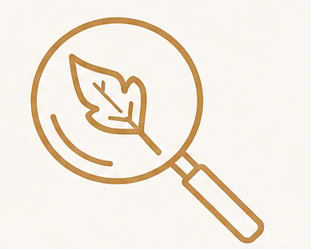
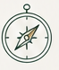
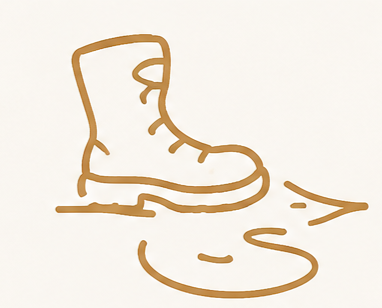
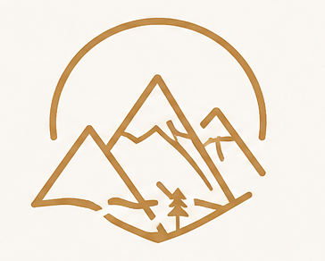

Biodiversity Research
We collect and share reliable observations that help researchers better understand Georgia's species, habitats and ecological processes.

About BioCaucasus
We connect curious travelers with field scientists to explore Georgia's extraordinary ecosystems, collect meaningful ecological data, and contribute to their long-term protection.
Discover Our StoryBioCaucasus combines eco-tourism and citizen science, creating expeditions that invite travelers to participate in real biodiversity observation and conservation work.
Our Story / Georgia
BioCaucasus began with a simple idea: Georgia's extraordinary biodiversity should not only be seen and admired — it should be carefully observed, documented, and protected.
We bring travelers, researchers, students and local specialists together in the field to observe wildlife, monitor ecosystems, record environmental changes, and contribute useful data to conservation efforts.
Every expedition is designed to create deeper knowledge while keeping our environmental footprint low and strengthening appreciation for Georgia's landscapes.

Field Principle 01
Observe carefully. Travel lightly. Leave useful knowledge behind.

What Guides Our Work
Four principles shape every expedition, observation and conservation decision we make.

We collect and share reliable observations that help researchers better understand Georgia's species, habitats and ecological processes.

We promote low-impact exploration that respects local communities, wildlife, culture and natural landscapes.

Our expeditions strengthen awareness of vulnerable ecosystems and the importance of protecting them over the long term.
Travelers become active observers and contributors to meaningful scientific work rather than passive spectators.
Georgia's Living Laboratories

Bird and large mammal tracking across ancient Caucasian woodland.

Gazelle observation and ecological research in Georgia's dry eastern landscapes.

Amphibian and high-rainfall ecosystem monitoring within Georgia's humid west.

Caucasian tur conservation, glacier observation, and climate research.
People Behind the Fieldwork
Field knowledge, local experience and rigorous observation guide every BioCaucasus expedition.

Ornithologist
Lagodekhi / Ancient ForestSpecializes in bird ecology, migration and forest biodiversity monitoring.

Alpine Ecologist
Kazbegi / Alpine ZoneResearches high-mountain ecosystems, alpine biodiversity and climate-driven environmental change.

Conservation Biologist
Mtirala / RainforestFocuses on amphibian conservation, habitat health and rainforest monitoring.
The most meaningful expedition leaves the landscape with more knowledge — not more impact.
The BioCaucasus Field Principle
Become Part of the Research
Choose an ecosystem, meet the researchers and contribute to real field observation across Georgia.